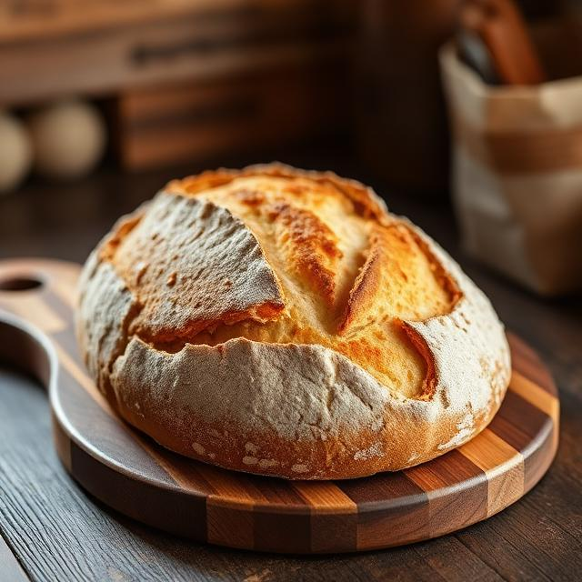
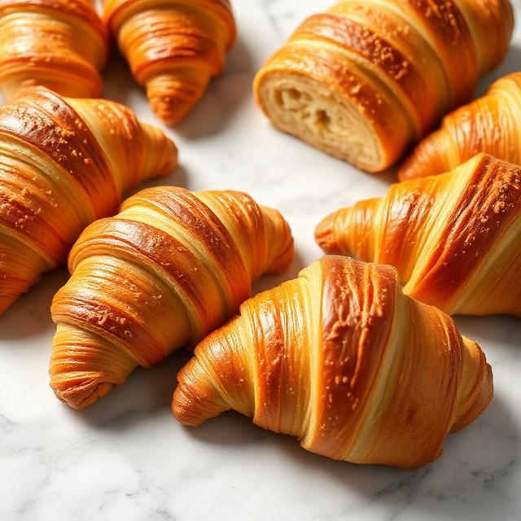
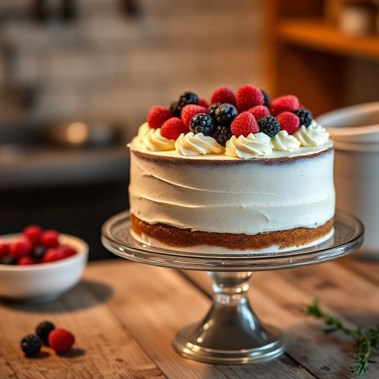
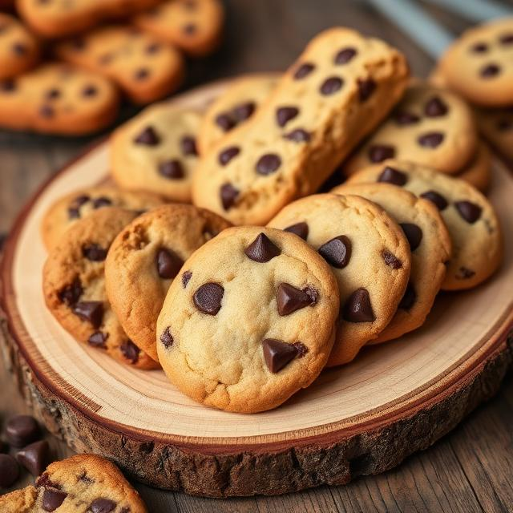

What Drives Us
To craft exceptional artisan breads and pastries using time-honored techniques and the finest locally-sourced ingredients. We believe that every loaf tells a story — of patience, of tradition, and of the hands that shaped it. Our mission is to nourish our community with honest, wholesome baked goods made without shortcuts.
To become the heart of every neighborhood we serve — a place where the aroma of fresh bread brings people together. We envision a future where artisan baking thrives, where sustainable practices are the standard, and where every bite carries the warmth of a hand-crafted tradition passed down through generations.
Where It All Began
Elena & Marco Rossi open a small bread oven in their garage, selling loaves at the local farmer's market.
After years of growing demand, The Bakery opens its doors on Elm Street with a team of three passionate bakers.
Our signature sourdough wins 'Best Artisan Bread' at the National Bakers' Guild competition.
We expand with a dedicated pastry kitchen, introducing French-inspired croissants, tarts, and seasonal specials.
Now with 25 bakers and two locations, The Bakery continues to serve the community with the same love and craft.
The People Behind the Bread
Co-Founder & Head Baker
Elena grew up kneading dough alongside her grandmother in a small Tuscan kitchen. Her passion for traditional bread-making led her to study at the Culinary Institute of Florence before bringing those old-world techniques to The Bakery.
Co-Founder & Pastry Chef
A trained pastry chef with over 20 years of experience, Marco perfected his craft in Parisian patisseries before returning home to co-found The Bakery. His croissants are legendary — crisp, buttery, and endlessly flaky.
Baked Fresh Daily

From our signature sourdough to rustic ciabatta and hearty rye, every loaf is slow-fermented for at least 24 hours and baked in our stone-deck oven.

Handmade with imported French butter, our pastries are laminated over three days for the perfect flaky, golden layers that shatter with every bite.

Custom-designed cakes for every occasion — birthdays, weddings, and milestones. Each cake is made from scratch with seasonal fruits and natural flavors.

Crispy, chewy, and irresistible. Our cookies are made in small batches using real butter, dark chocolate, and toasted nuts.